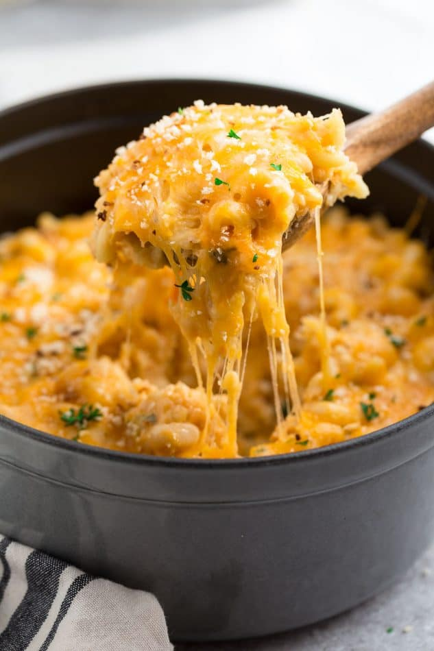

Mac and Cheese Recipe (Stovetop & Baked)

Ingredients
- 1 cup elbow macaroni (100 g / 3.5 oz)
- 3 tablespoons butter (for roux) + extra for greasing pan
- 2 tablespoons all-purpose flour
- 2 cups milk (warm)
- 150 g (5.3 oz) shredded cheese (cheddar or your favorite)
- ⅛–¼ teaspoon crushed black pepper
- Pinch of grated nutmeg
- Salt to taste
- ⅓ cup breadcrumbs (for topping)
- 1-2 tablespoons butter (melted, for breadcrumbs)
- 2-3 tablespoons shredded cheese (for topping)
Steps
- Measure out 1 cup macaroni (a.k.a. elbow pasta), (100 grams or 3.5 ounces)
- Boil the pasta in salted water per package instructions. I used 4 cups water, plus ½ teaspoon salt.
- Cook the pasta until it is al dente, meaning just cooked with still a bit of a bite. You don't want it to get too soft or mushy.
- Drain the pasta using a colander or strainer.
- While the pasta is cooking, grease a baking pan with some softened butter.
- Then in a microwave safe bowl, melt 1 teaspoon butter.
- Now add ⅓ cup breadcrumbs to the melted butter.
- With a spoon, mix the breadcrumbs with the melted butter very well. Set aside.
- Heat 3 tablespoons butter in a thick-bottomed saucepan over a low flame
- The butter should be well heated, with a frothy, bubbly surface.
- Then add 2 tablespoons of all-purpose flour.
- Whisk the flour into the butter as soon as you add it. Act quickly here!
- Keep on stirring so that lumps do not form.
- The frequent stirring helps the flour to cook evenly.
- You will see the flour frothing and bubbling up while stirring.
- Sauté the flour until you get a nice, nutty aroma from it and the mixture is a pale golden color. Don't over-brown the roux here, or you'll risk it tasting bitter.
- Keep the heat to the lowest setting. While continuously whisking, pour the milk in a gentle stream.
- Stir frequently while the milk warms and heats up.
- The sauce will begin to thicken, so continue to stir often.
- Remove the saucepan from the heat and wait for a minute. Then add 150 grams (5.3 ounces) of your favorite shredded cheese
- The cheese needs to melt well in the hot white sauce (bechamel sauce). This is what will turn your white sauce into a smooth, creamy cheese sauce known as mornay
- Add ⅛ to ¼ teaspoon crushed black pepper and a pinch or two of grated nutmeg or nutmeg powder.
- Add salt to taste.
- Stir again.
- Now add the pasta to the cheese sauce.
- With a spoon, mix thoroughly. The sauce should coat all of the macaroni very well.
- Feel free to stop here! The macaroni and cheese is done and ready to serve. However, if you'd like to bake it before serving, proceed to the next step.
- Pour the prepared mac and cheese into the greased pan.
- Top evenly with the breadcrumbs and melted butter mixture
- Now sprinkle 2 to 3 tablespoons of the remaining shredded cheese on top.
- Bake in a preheated oven at 390 degrees Fahrenheit (200 degrees Celsius) for 15 to 20 minutes until the cheese melts and the mac and cheese is bubbly and hot. Be sure to check while baking as oven temperatures var
- Remove from oven and let stand for 5 minutes. Then serve baked mac and cheese hot.